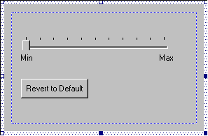

[The feature associated with this page, DirectShow, is a legacy feature. It has been superseded by MediaPlayer, IMFMediaEngine, and Audio/Video Capture in Media Foundation. Those features have been optimized for Windows 10 and Windows 11. Microsoft strongly recommends that new code use MediaPlayer, IMFMediaEngine and Audio/Video Capture in Media Foundation instead of DirectShow, when possible. Microsoft suggests that existing code that uses the legacy APIs be rewritten to use the new APIs if possible.]
At this point the filter supports everything that it needs for a property page. The next step is implementing the property page itself. Start by deriving a new class from CBasePropertyPage. The following example shows part of the declaration, including some private member variables that will be used later in the example:
class CGrayProp : public CBasePropertyPage
{
private:
ISaturation *m_pGray; // Pointer to the filter's custom interface.
long m_lVal // Store the old value, so we can revert.
long m_lNewVal; // New value.
public:
/* ... */
};
Next, create a dialog resource in the resource editor, along with a string resource for the dialog title. The string will appear in the tab for the property page. The two resource IDs are arguments to the CBasePropertyPage constructor:
CGrayProp::CGrayProp(IUnknown *pUnk) :
CBasePropertyPage(NAME("GrayProp"), pUnk, IDD_PROPPAGE, IDS_PROPPAGE_TITLE),
m_pGray(0)
{ }
The following illustration shows the dialog resource for the example property page.

Now you are ready to implement the property page. Here are the methods in CBasePropertyPage to override:
The remainder of this tutorial describes each of these methods.
Next: Step 5. Store a Pointer to the Filter.
Creating a Filter Property Page
Â
Â